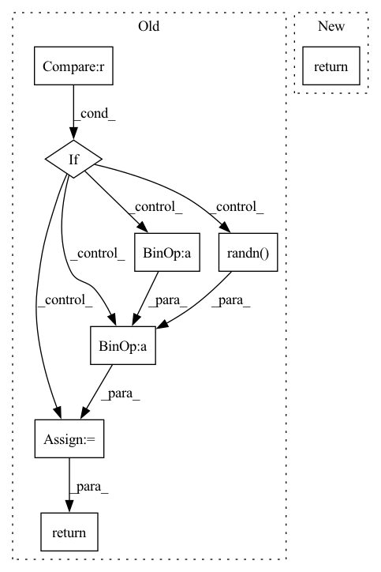

Pattern ID :19705

Before Change
* W:(Batch size, nof_feature)->(1, 1, Batch size, nof_feature)
"""
return_key = False
if Key is None:
// Generate the key
mean = 0
dim = 1
for i in range(len(W.shape)):
dim *= W.shape[i]
std = (1/dim) ** (1/2)
Key = (torch.randn(W.shape)*std + mean).cuda()
Key /= torch.norm(Key, dim=1, keepdim=True)
Key = Key.reshape([1, 1, Key.shape[0], -1])
return_key = True
// Circular convolution by circular padding
// Circular padding: [1,2,3] with pad(2,0) -> [2,3] +[1,2,3] + []
W = W.reshape([1, 1, W.shape[0], -1])
// W = [w1 w2 w0 w1 w2] Key = [K2 K1 K0] (flipped)
// faster than flip() when dim is large
inverse_idx = torch.arange(Key.shape[3]-1, -1, -1)
V = F.conv2d(
circular_pad2d(W, pad=(W.shape[-1]-1, 0)),
Key[:, :, :, inverse_idx],
padding=0, stride=1).reshape([1, -1])
return (Key, V) if return_key else V
def circular_corr(compress_V, Key):
After Change
circular_pad2d(W, pad=(W.shape[-1]-1, 0)),
Key[:, :, :, inverse_idx],
padding=0, stride=1).reshape([1, -1])
return V
def circular_corr(compress_V, Key):
In pattern: SUPERPATTERN
Frequency: 3
Non-data size: 8
Instances
Fragment ID: 64289948
Project Name: wesleyhsieh0806/c3-sl
Commit Name: 4b775698efd6c7bf6057133a08093b10c7eea3c6
Time: 2021-08-06
Author: b06901053@ntu.edu.tw
File Name: CIFAR10/split_compress_recon_grad/utils.py
M Class Name: AnonimousClass
N Class Name: AnonimousClass
M Method Name: circular_conv(2)
N Method Name: circular_conv(2)
M Parent Class:
N Parent Class:
M File Name: CIFAR10/split_compress_recon_grad/utils.py
N File Name: CIFAR10/split_compress_recon_grad/utils.py
M Start Line: 37
M End Line: 61
N Start Line: 44
N End Line: 48
'>
Before Change
// 3. optionally sample variance
variance = 0
if eta > 0:
noise = torch.randn(image.shape, generator=generator).to(image.device)
variance = self.noise_scheduler.get_variance(t, num_inference_steps).sqrt() * eta * noise
// 4. set current image to prev_image: x_t -> x_t-1
image = pred_prev_image + variance
// decode image with vae
image = self.vqvae.decode(image)
return image
After Change
// decode image with vae
image = self.vqvae.decode(image)
return {"sample": image}
'>
Fragment ID: 64289961
Project Name: huggingface/diffusers
Commit Name: f448360bd0dfe5e28ee65ab2130532db91d5eafe
Time: 2022-07-15
Author: patrick.v.platen@gmail.com
File Name: src/diffusers/pipelines/latent_diffusion_uncond/pipeline_latent_diffusion_uncond.py
M Class Name: LatentDiffusionUncondPipeline
N Class Name: LatentDiffusionUncondPipeline
M Method Name: __call__(6)
N Method Name: __call__(6)
M Parent Class: DiffusionPipeline
N Parent Class: DiffusionPipeline
M File Name: src/diffusers/pipelines/latent_diffusion_uncond/pipeline_latent_diffusion_uncond.py
N File Name: src/diffusers/pipelines/latent_diffusion_uncond/pipeline_latent_diffusion_uncond.py
M Start Line: 31
M End Line: 71
N Start Line: 31
N End Line: 50
'>
Before Change
// 3. optionally sample variance
variance = 0
if eta > 0:
noise = torch.randn(image.shape, generator=generator).to(image.device)
variance = self.noise_scheduler.get_variance(t, num_inference_steps).sqrt() * eta * noise
// 4. set current image to prev_image: x_t -> x_t-1
image = pred_prev_image + variance
return image
After Change
// do x_t -> x_t-1
image = self.scheduler.step(residual, t, image, eta)["prev_sample"]
return {"sample": image}
'>
Fragment ID: 64289947
Project Name: huggingface/diffusers
Commit Name: f448360bd0dfe5e28ee65ab2130532db91d5eafe
Time: 2022-07-15
Author: patrick.v.platen@gmail.com
File Name: src/diffusers/pipelines/ddim/pipeline_ddim.py
M Class Name: DDIMPipeline
N Class Name: DDIMPipeline
M Method Name: __call__(6)
N Method Name: __call__(6)
M Parent Class: DiffusionPipeline
N Parent Class: DiffusionPipeline
M File Name: src/diffusers/pipelines/ddim/pipeline_ddim.py
N File Name: src/diffusers/pipelines/ddim/pipeline_ddim.py
M Start Line: 35
M End Line: 77
N Start Line: 42
N End Line: 59